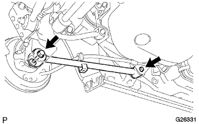
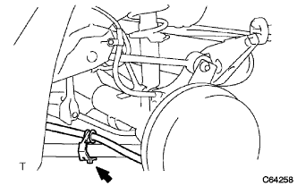

Lower Control Arm ASSY LH (4WD) Installation |
| 1. Lower Control Arm ASSY LH temporary tightening |
|  |
With two bolts and nuts, provisionally tighten the rower control arm Assy LH.
| 2. Calm down the vehicle |
Jack the vehicle, shake up and down several times, and calm the rear suspension.
| 3. Lower control arm Assy LH main closure |
Axle housing is supported by jacks and the like and loading the suspension.
Fix the nut and tighten the two bolts.
|  |
Attach the parking brake cable ASSY No.3 with bolts to the rower control arm Assy LH.
| 4. Rear tire installation |